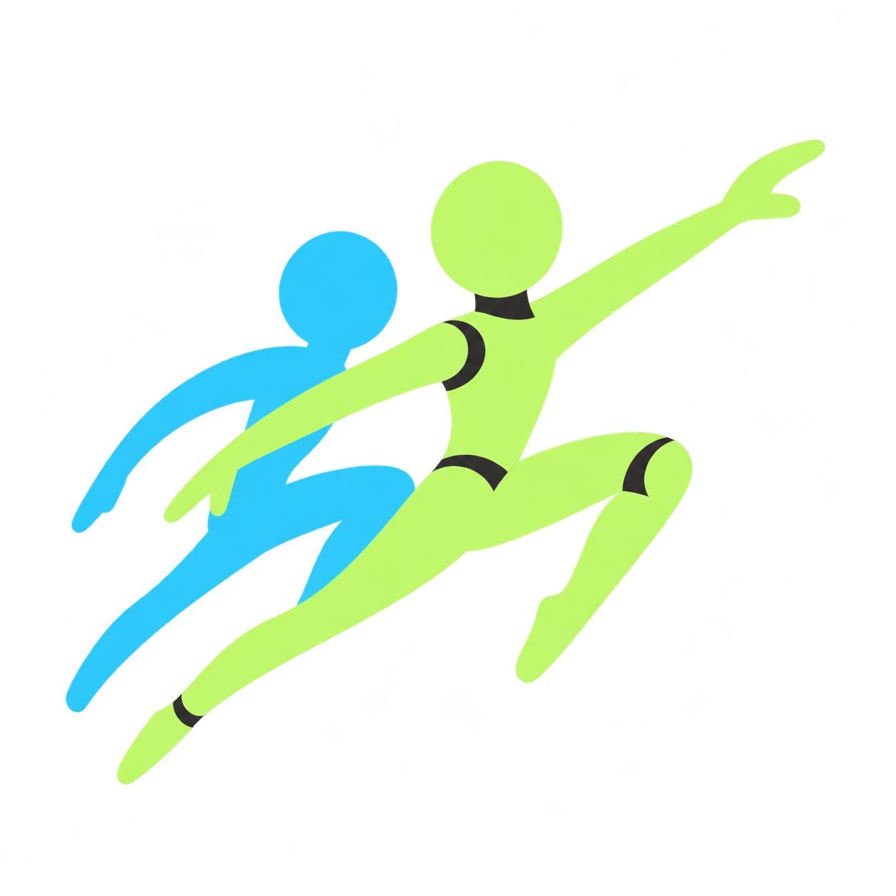

Practice
Starts with the current character and an empty timeline.
Includes the character, its rig, keyed motion and whole-character alignment.
Choose a reference to start an empty take with the same character. Import animation opens a rigged FBX or GLB motion with its model for editing. Your working character always comes from the reference.
Click a joint in the skeleton, including finger joints when available, then drag its rotation rings or translation arrows. Scale always targets the whole character. World and Local select the orientation of the gizmo.
Reset reference restores the original clip, linked playhead, normal playback speed, side-by-side view and display settings. Your animation keys and character alignment are kept.
Auto key records one pose when you release a gizmo. Turn it off to pose manually, then choose Key pose. Create your own keys and timing, and use Overlay to compare the motion.
Pose contains FK/IK limb controls and frame-range contact pins. Scene contains movable obstacles with grid snapping, duplication and dimensions. Study contains pose ghosts, trajectories, A–B loops, notes and saved takes for comparison.
Channels opens a timeline per joint. Curves lets you drag joint keys, change individual rotation or translation values and edit Bezier easing handles. Shift+F focuses the selected joint or object. Ctrl+D duplicates a selected scene object.